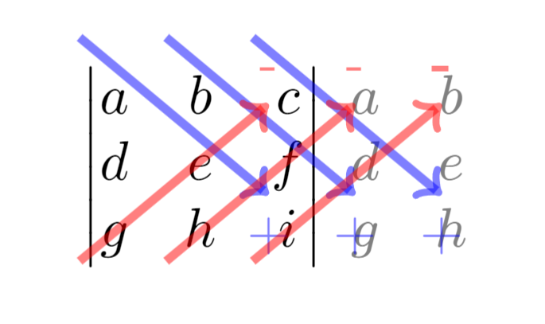
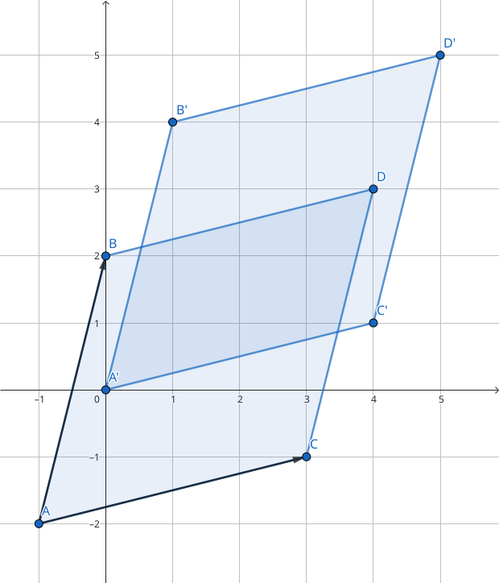

3. Ákveður
Ákveða (e. determinant) er fall frá \(\mathbb{R}^{n \times n}\rightarrow \mathbb{R}\) sem úthlutar \(n \times n\) fylki \(A\) tölu \(\det(A)\). Ákveða er einungis skilgreind fyrir ferningsfylki. Hana má nota t.d. til þess að segja til um hvort fylki sé andhverfanlegt. Ef ákveða fylkis er \(0\) er fylkið ekki andhverfanlegt.
3.1. Ákveður \(2 \times 2\) fylkja
3.1.1. Skilgreining: Ákveða \(2 \times 2\) fylkis
Skilgreining
Ákveða \(2 \times 2\) fylkis \(A=\begin{bmatrix}a & b\\ c & d \end{bmatrix}\) er talan
Athugasemd
Athugið að ákveða \(2 \times 2\) fylkis \(A\) kemur fyrir í andhverfu fylkisins
\[\begin{split}A^{-1} =\frac{1}{ad-bc}\begin{bmatrix} d & -b \\ -c & a \end{bmatrix}.\end{split}\]
Við sjáum að fylkið \(A^{-1}\) er ekki skilgreint fyrir \(ad-bc=0\), m.ö.o. fylkið \(A\) er andhverfanlegt ef og aðeins ef \(\det(A)\neq 0\).
3.2. Ákveður \(n \times n\) fylkja
3.2.1. Skilgreining: Hlutfylki
Skilgreining
Látum \(A\) vera \(n \times n\) fylki. Fylkið sem fæst með því að fjarlægja \(i\)-tu línu og \(j\)-ta dálk \(A\) kallast hlutfylki, \(A_{ij}\), og hefur stærð \((n-1)\times (n-1)\).
3.2.1.1. Sýnidæmi: Hlutfylki
Dæmi
Hver eru hlutfylki, \(A_{ij}\), fylkisins
Lausn
\(A\) hefur eftirfarandi hlutfylki
3.2.2. Skilgreining: Ákveða \(n \times n\) fylkis
Skilgreining
Ákveða \(n \times n\) fylkis \(A\) er skilgreind
3.2.2.1. Sýnidæmi: Ákveða \(3 \times 3\) fylkis
Dæmi
Finnum ákveðu \(3 \times 3\) fylkis
með því að nota skilgreininguna.
Lausn
Fáum
Þessi aðferð kallast að liða eftir línu eða dálk eftir því sem við á. Í dæminu hér að ofan var liðað eftir línu 1. Athugið að velja má hvaða línu/dálk liðað er eftir og hentugast er að velja þá línu/dálk sem hefur flest \(0\). Við sjáum að ákveða fylkis sem hefur núlllínu eða núlldálk er alltaf \(0\).
Athugasemd
Formerkin í liðun eftir línu eða dálk fylgja mynstri sem minnir á skákborð
\[\begin{split}\begin{bmatrix} + & - & + & \dots\\ - & + & - & \dots\\ + & - & + & \dots\\ \vdots & \vdots & \vdots & \ddots \end{bmatrix}\end{split}\]
3.2.3. Skilgreining: Önnur aðferð til þess að reikna ákveðu \(3 \times 3\) fylkis
Skilgreining
Reikna má ákveðu \(3 \times 3\) fylkist með því að endurtaka fyrstu tvo dálka hægra megin við fylkið og leggja saman og draga frá þær 6 hornalínur sem þannig myndast.
{kind=link}

Engin sambærileg regla gildir fyrir \(n \geq 4\).
3.3. Ákveður þríhyrningsfylkja
3.3.1. Setning: Ákveða þríhyrningsfylkja
Setning
Ef \(A\) er þríhyrningsfylki þá er ákveða þess margfeldi stakanna á hornalínunni.
3.3.1.1. Sýnidæmi: Ákveður þríhyrningsfylkja
Dæmi
Finna á ákveður eftirfarandi
Lausn
Fáum með liðun eftir dálk 1
Fáum með liðun eftir línu 1
Fáum beint
3.4. Ákveður frumfylkja
Frumfylki eru þau fylki sem fást þegar einni einfaldri línuaðgerð er beitt á einingarfylki.
Aðvörun
Línuaðgerðir varðveita almennt ekki ákveður, heldur breyta þeim með mjög reglulegum hætti.
3.4.1. Setning: Ákveða frumfylkja
Setning
Látum \(E\) vera frumfylki. Ákveða frumfylkis er
3.4.1.1. Sýnidæmi: Ákveður frumfylkja
Dæmi
1. Umskipting. Látum \(E\) vera frumfylkið sem fæst með því að leggja margfeldi af einni línu við aðra, þ.e.a.s umskipting. Frumfylki af þessari gerð eru öll hornalínufylki, t.d.
Ákveðan er margföldun stakanna á hornalínunni, \(\det(E)=1\).
2. Víxlun. Látum \(E\) vera frumfylkið sem fæst með því að víxla á línu \(i\) og \(j\), t.d.
Með einföldum útreikningum er auðvelt að sannfæra sig um að \(\det(E)=-1\).
3. Skölun. Látum \(E\) vera frumfylkið sem fæst með því að margfalda línu með tölu, t.d.
Við sjáum með því að margfalda hornalínuna að ákveðan er \(\det(E)=\pi\), \(\det(E)=k\) og \(\det(E)=16\) fyrir þessi þrjú fylki.
Í mörgum dæmum koma fyrir nokkrar umskiptingar, víxlanir og/eða skalanir. Til dæmis er alltaf hægt að koma ferningsfylki yfir á efri stallagerð með því að nota einungis umskiptingar og víxlanir. Ef \(U\) er efri stallagerð \(A\), sem fékkst með því að nota aðeins þessar tvær aðgerðir, gildir að \(\det(A)=\pm \det(U)\). Þetta má setja fram sem hjálparsetningu.
3.4.2. Hjálparsetning
Setning
Ef ferningsfylki \(A\) má umbreyta í fylki af efri stallagerð \(U\) með umskiptingu og víxlunum og
þar sem \(r\) er fjöldi víxlana sem notaðar voru við að breyta \(A\) í \(U\).
Þessi niðurstaða gefur af sér reiknirit fyrir ákveðu. Fyrst er fylki komið yfir á efra stallaform með umskiptingu og víxlunum, síðan eru víxlanir taldar og ákveða efra þríhyrningsfylkisins reiknuð með því að margfalda stökin á hornalínunni.
3.4.3. Hjálparsetning
Setning
Ef ferningsfylki \(A\) hefur tvær eins línur \(i=j\) þá er \(\det(A)=0\). Enn fremur, ef ein lína í \(A\) er margfeldi af annarri þá er \(\det(A)=0\).
3.5. Eiginleikar ákveða
3.5.1. Setning: Eiginleikar ákveða
Setning
Látum \(A\) og \(B\) vera \(n \times n\) fylki. Þá gildir
1. \(\det(A^T)=\det(A)\)
2. \(\det(AB)=\det(A)\cdot\det(B)\)
3. \(\det(A^{-1})=\frac{1}{\det(A)}\)
1 er sannað með þrepun. 2 fæst með því að nota að annað fylkið, sem er andhverfanlegt, er línu-jafngilt einingafylkinu. Jafnan helst einnig ef annað fylkið er ekki andhverfanlegt, þá er ákveðan \(AB\) einfaldlega \(0\). 3 leiðir beint af 2.
Athugasemd
Um tvö ferningsfylki \(A\) og \(B\) gildir almennt ekki að \(\det(A+B)=\det(A)+\det(B)\).
3.5.2. Skilgreining: Hjáþáttafylki
Skilgreining
Fyrir hlutfylki \(A_{ij}\) skilgreinum við hjáþátt \(C_{ij}\) í sæti \((i,j)\) með
og hjáþáttafylki (e. cofactor matrix) \(A\) með
3.5.3. Skilgreining: Aðoka fylki
Skilgreining
Látum \(C\) vera hjáþáttafylki \(A\). Þá skilgreinum við aðoka fylkið \(\text{adj}A\) (e. adjoint matrix) með
3.5.4. Setning: Andhverfujafna
Setning
Látum \(A\) vera andhverfanlegt \(n \times n\) fylki þá er
Þessi formúla fyrir andhverfu fylkis er tímafrek og almenn leið til þess að reikna andhverfu \(n \times n\) fylkis oftast hagnýtari.
3.6. Regla Cramers
Regla Cramers er fræðileg niðurstaða sem gefur beina lausn á \(A \textbf{x} = \textbf{b}\). Þó er oftast fljótlegra að leysa jöfnuhneppi beint heldur en að nota hana.
3.6.1. Ritháttur
Ritháttur
Látum \(A=[\bf{a}_1\dots\bf{a}_n]\) vera \(n \times n\) fylki og \(\textbf{b}\in \mathbb{R}^n\) vera vigur. Þá skilgreinum við \(A_j(\textbf{b})\) sem fylkið þar sem \(j\)-ta dálkvigur fylkisins er skipt út fyrir \(\textbf{b}\), þ.e.
3.6.2. Setning: Regla Cramers
Setning
Látum \(A\) vera andhverfanlegt \(n \times n\) fylki, og \(\textbf{b}\in \mathbb{R}^n\) vera vigur. Þá er lausnin á jöfnunni \(A \textbf{x} = \textbf{b}\) gefin með formúlunni
3.6.2.1. Sýnidæmi: Leysa jöfnuhneppi með reglu Cramers
Dæmi
Leysið eftirfarandi jöfnuhneppi með því að nota reglu Cramers
Lausn
Fylkjaframsetning jöfnuhneppisins er
með
Athugum að \(\det A=-2\), \(\det A_1(\textbf{b})=14\), \(\det A_2(\textbf{b})=-24\) og \(\det A_3(\textbf{b})=8\). Með reglu Cramers fæst því
Nú er um að gera að prófa lausnina með því að stinga inn fyrir \(\textbf{x}\) í \(A \textbf{x}=\textbf{b}\).
3.7. Ákveður og rúmfræði
3.7.1. Skilgreining: Samsíðungur
Skilgreining
Látum \(u=(u_1,u_2)\) og \(v=(v_1,v_2)\) vera tvo vigra í \(\mathbb{R}^2\). Samsíðungurinn (e. paralellogram) sem vigrarnir ákvarða er ferhyrningurinn með hornpunkta \((0,0), (u_1,u_2), (v_1,v_2),\) og \((u_1+v_1,u_2+v_2)\).
3.7.2. Skilgreining: Samhliðungur
Skilgreining
Látum \(u=(u_1,u_2,u_3), v=(v_1,v_2,v_3)\) og \(w=(w_1,w_2,w_3)\) vera vigra í \(\mathbb{R}^3\). Samhliðungurinn (e. parallelepiped) sem vigrarnir ákvarða er rúmmálið með hornpunkta
3.7.3. Setning: Flatarmál og rúmmál
Setning
1. Látum \(A\) vera \(2 \times 2\) fylki. Flatarmál samsíðungana sem dálkvigrar \(A\) ákvarða er \(\det A\).
2. Látum \(A\) vera \(3 \times 3\) fylki. Rúmmál samhliðungsins sem dálkvigrar \(A\) ákvarða er \(\det A\).
Rifjum upp að mynd mengis \(S \subseteq \R\) er mengið \(T(S)=\{T(s) : s \in S\}\).
3.7.4. Setning: Mynd varpanna
Setning
1. Látum \(T: \R^2 \rightarrow \R^2\) vera línulega vörpun og \(S\) vera samsíðunginn sem ákvarðast af \(u\) og \(v\) í \(\R^2\). Þá er myndin \(T(S)\) samsíðungurinn sem ákvarðast af vigrunum \(T(u)\) og \(T(v)\).
2. Látum \(T: \R^3 \rightarrow \R^3\) vera línulega vörpun og \(S\) vera samhliðunginn sem ákvarðast af \(u, v\) og \(w\) í \(\R^3\). Þá er myndin \(T(S)\) samhliðungurinn sem ákvarðast af vigrunum \(T(u), T(v)\) og \(T(w)\).
3.7.5. Setning: Flatarmál og rúmmál línulegra varpanna
Setning
1. Gerum ráð fyrir að \(T\colon \R^2 \rightarrow \R^2\) sé línuleg vörpun með fylki \(A\), og \(S\) vera samsíðunginn sem ákvarðast af \(u\) og \(v\) í \(\R^2\). Þá er
2. Gerum ráð fyrir að \(T\colon \R^3 \rightarrow \R^3\) sé línuleg vörpun með fylki \(A\), og \(S\) vera samhliðungurinn sem ákvarðast af \(u, v\) og \(w\) í \(\R^3\). Þá er
3.7.5.1. Sýnidæmi: Flatarmál samsíðungs
Dæmi
Reikna á flatarmál samsíðungsins sem ákvarðaður er af hornpunktunum \((-1,-2), (0,2), (3,-1)\) og \((4,3)\).
Lausn
Við byrjum á því að hliðra hornpunktunum þannig að einn þeirra sé í miðju hnitakerfisins \((0,0)\). Nýju hnitin sem fást eru \((-1+1,-2+2)=(0,0), (0+1,2+2)=(1,4),\) \((3+1,-1+2)=(4,1)\) og \((4+1,3+2)=(5,5)\).
Samsíðungurinn er ákvarðaður af dálkvigrum fylkisins
Þar sem \(|\det A| = |-15|\) er flatarmál samsíðungsins \(15\).
{kind=link}
